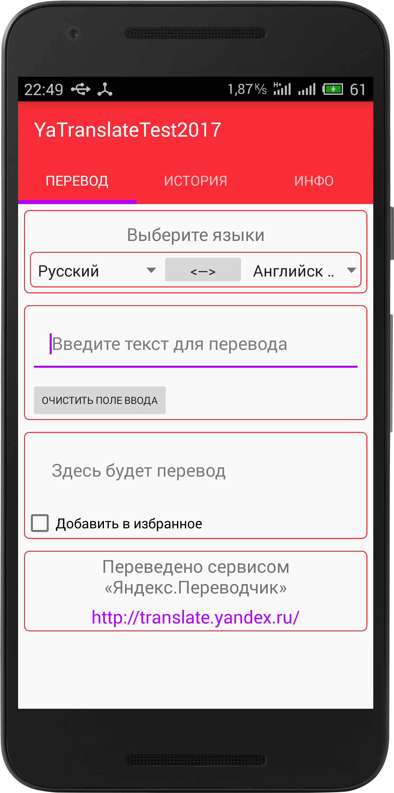

Привет, меня зовут Денис, а это моё небольшое резюме.
Кто я:
- Закончил ИАТЭ НИЯУ МИФИ в 2015 году, инженер по специальности "Приборы и методы контроля качества и диагностики."
- Многое в программировании узнал сам. Разработкой под андроид занялся в сентябре 2016 года.
- Осенью 2017 года успешно выпустился из проекта Яндекса "Мобилизация". На финальном этапе проекта выступал в роли тимлида.
- Постоянно учусь и развиваюсь. Хочу стать специалистом в области разработки ПО.
Проекты:
WeatherApp
- Погодное приложение. Позволяет добавлять города и выбирать текущий город для получения прогноза погоды на неделю.
- В настройках можно выбирать интервал для получения прогноза погоды в фоне.
- Избранные города и прогноз хранятся в базе данных на устройстве.
- Код покрыт тестами почти на 50% :)
- Стек технологий: RxJava, Retrofit, Dagger, ButterKnife, Room, Android-Job, Google Places API, Open Weather API.


LightsOut


- Игра, созданная на хакатоне за 8 часов в команде из четырех разработчиков.
- Реализовал: обработку тач-жестов, взаимодействие с низкоуровневым вычислительным движком, рендер финальной сцены.
YamblzTranslator



- Тестовое задание для проекта Яндекса "Мобилизация".
- Приложение для перевода текста на различные языки.
- Полученные переводы хранятся в базе данных с возможностью удаления.
- Также переводы можно отмечать как "избранные" и просматривать их в отдельной вкладке.
- Библиотек в проекте нет :). Все построено с помощью встроенных средств (AsyncTask, Content Provider, SQLite).
AutoCosts
- Приложение для учета расходов на содержание автомобиля.
- Позволяет добавлять различные типы расходов (заправка, ТО, и т.п.).
- Вся информация хранится в базе данных.
- Есть возможность смотреть статистику по типам расходов, в т.ч. средний расход топлива.
- Библиотек в проекте нет. Все построено с помощью встроенных средств.


- Почта: decsent@yandex.ru
- Телеграм: @Denis_Verentsov
- Github: DEcSENT